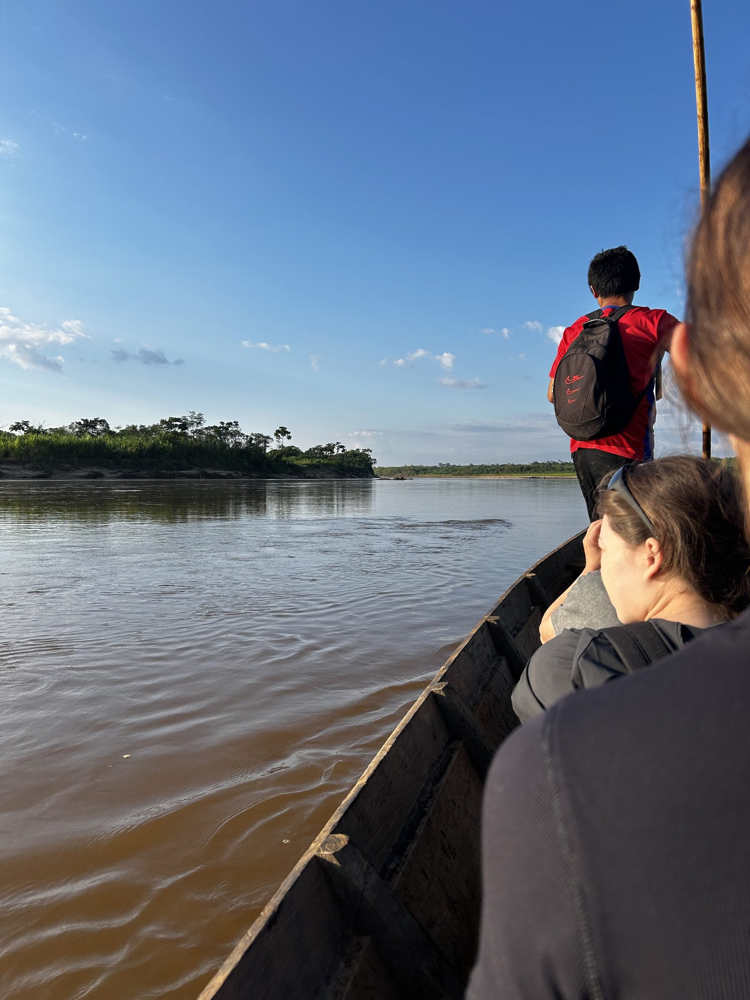
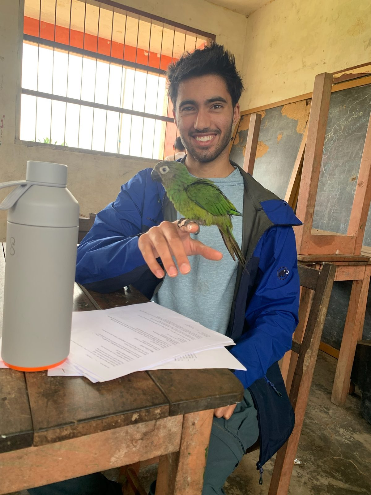
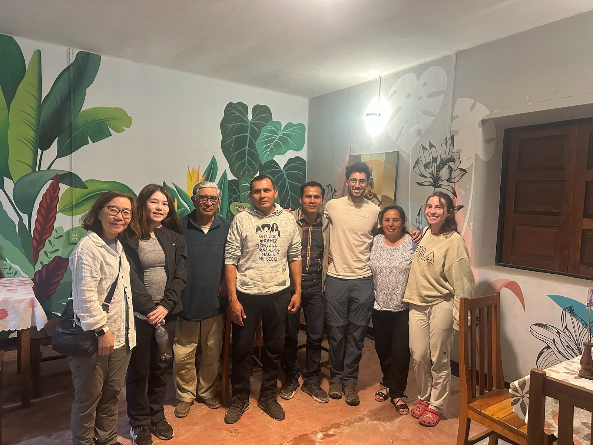

Learning from few examples in the Bolivian Amazon
Fieldwork · study design · R
Question. PLACEHOLDER — what were you trying to find out, in one sentence a non-specialist would follow.
Approach. PLACEHOLDER — how you ran it, how many participants, and the part that had to change on site.
Finding. PLACEHOLDER — what the data showed and why it matters.


